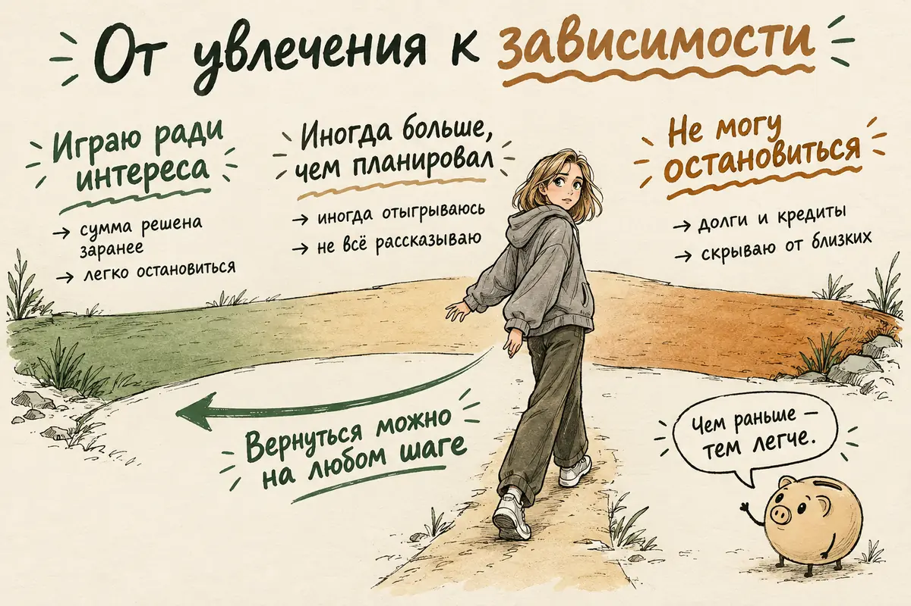
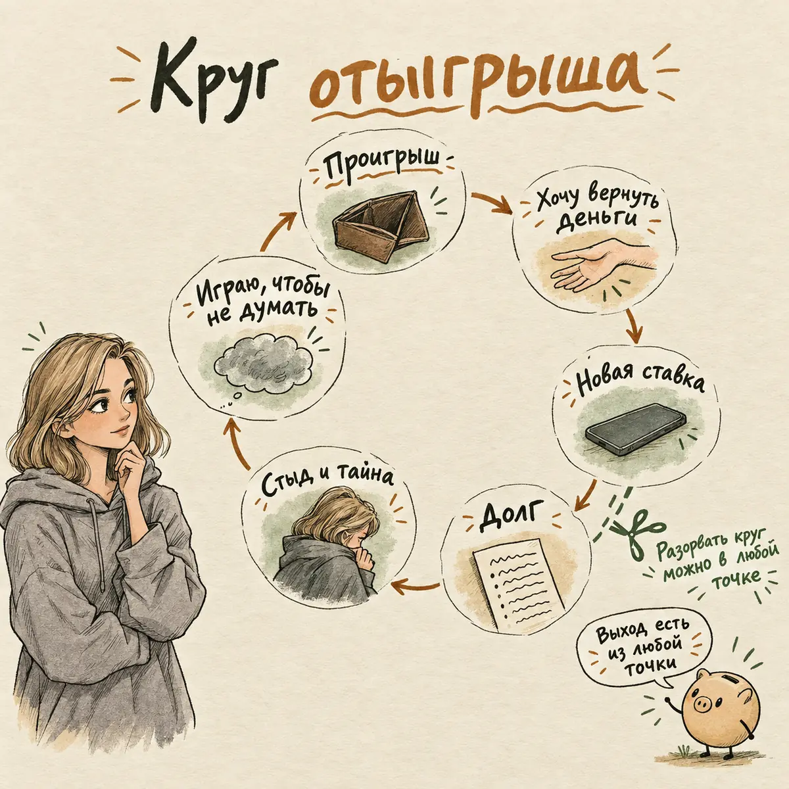
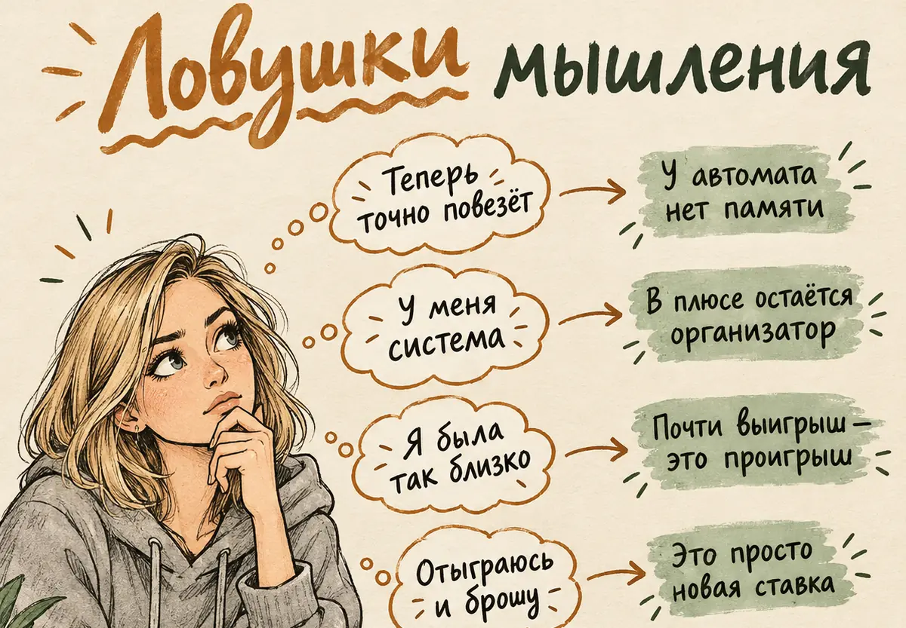
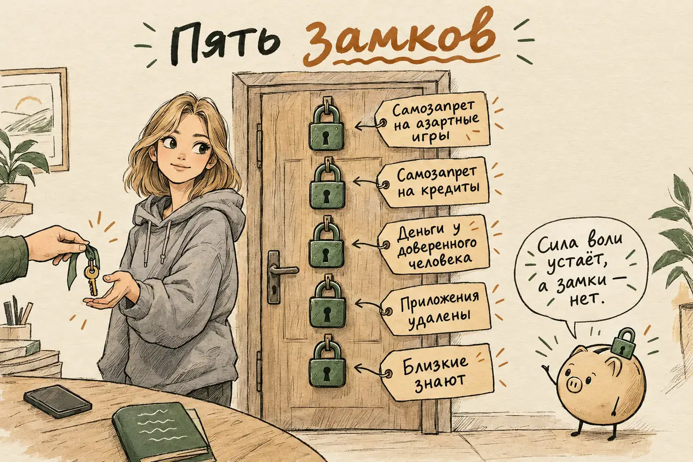
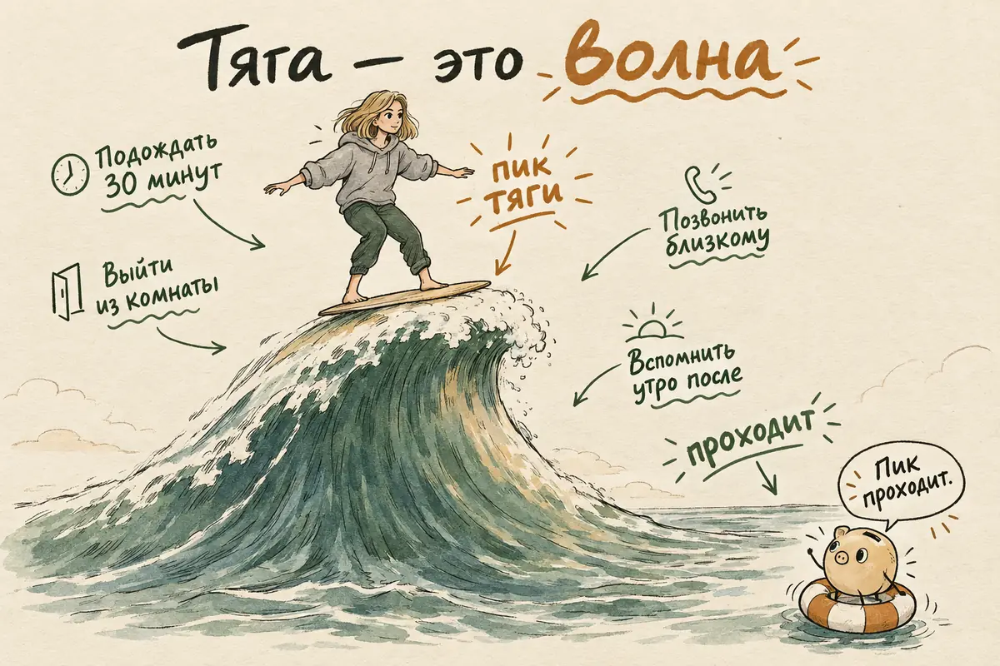
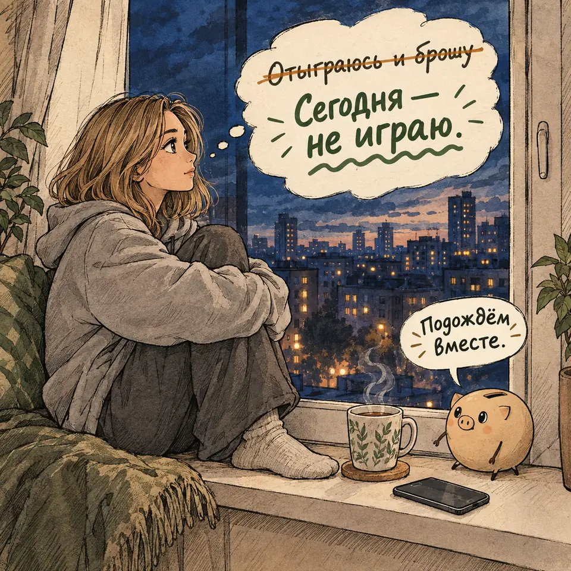
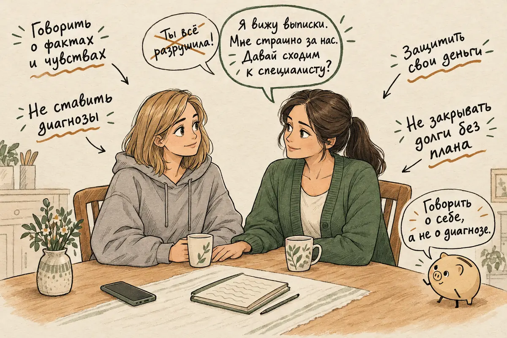

Лудомания: признаки игровой зависимости, как бросить ставки и получить помощь
Обновлено: 07.10.2026 · 18 минут чтения
«Отыграюсь — и всё». «Последняя ставка». «В этот раз точно зайдёт». Если эти фразы звучат у вас в голове всё чаще, а деньги, время и спокойствие уходят в игру быстрее, чем вы успеваете заметить, — эта статья для вас. Лудомания, или игровая зависимость, — это состояние, при котором человек теряет контроль над азартной игрой: играет дольше и на большие суммы, чем собирался, ставит игру выше остальной жизни и продолжает, несмотря на долги, ложь и разрушенные отношения. В МКБ-11 она называется «расстройство, вызванное азартными играми», и это психическое расстройство, а не признак слабой воли или «плохого характера». Ниже — как отличить увлечение от зависимости, почему отыгрыш затягивает всё глубже, с чего начать, если вы узнали себя или близкого, и как работает новый самозапрет на азартные игры.
Если вы узнали себя — начните отсюда.
- Не пытайтесь отыграться: проигранное уже потрачено.
- Удалите приложения букмекеров и казино и выйдите из аккаунтов.
- Оформите на Госуслугах самозапрет на азартные игры и самозапрет на кредиты.
- Передайте управление деньгами человеку, которому доверяете.
- Расскажите о проблеме хотя бы одному близкому.
- Обратитесь к психотерапевту, психиатру-наркологу или в группу «Анонимные игроки».
- Что такое лудомания простыми словами
- Увлечение, риск или зависимость: как отличить
- Признаки лудомании
- Почему так трудно остановиться
- Ловушки мышления игрока
- Зачем играть, когда уже не весело
- Есть ли у лудомании стадии
- Кто в группе риска
- Чем опасна игровая зависимость
- Как бросить ставки и азартные игры: 8 шагов
- Самозапрет на азартные игры: как оформить
- Если тянет сыграть прямо сейчас
- Как лечат лудоманию
- Если случился срыв
- Как помочь близкому: если лудоман муж, сын или друг
- Ошибки, которые мешают бросить
- Когда нужна помощь срочно
- Частые вопросы
Что такое лудомания простыми словами
Лудомания — это зависимость от азартных игр, при которой игра из развлечения превращается в то, что управляет вашей жизнью. Слово составлено из латинского ludus — «игра» — и греческого «мания». Врачи сейчас чаще говорят «игровая зависимость» или «патологическое влечение к азартным играм», а в Международной классификации болезней МКБ-11 состояние называется «расстройство, вызванное азартными играми» и стоит в одном разделе с зависимостями от веществ.
По МКБ-11 у расстройства три стержня:
- Потеря контроля. Человек не может управлять тем, когда начинает играть, как часто, сколько ставит и когда останавливается.
- Игра становится главнее остального. Ради неё откладываются работа, семья, сон, друзья, обязательства.
- Игра продолжается, несмотря на вред. Долги, ссоры, проблемы на работе уже есть — а ставки не прекращаются, иногда даже растут.
Всё это должно приводить к заметному страданию или проблемам в семье, на работе, в учёбе. Обычно картина складывается не меньше чем за 12 месяцев, но если признаки выражены сильно, врач может поставить диагноз и раньше. При этом неважно, где человек играет: в зале игровых автоматов, в букмекерской конторе или в приложении на телефоне. В МКБ-11 это прямо разделено на «преимущественно онлайн» и «преимущественно офлайн».
Важно понимать, что лудомания — не про жадность и не про глупость. Ей подвержены умные, успешные, ответственные люди, в том числе те, кто прекрасно понимает математику ставок. Зависимость не спрашивает, что вы знаете. Она держится на механизмах обучения и ожидания награды, которые срабатывают быстрее доводов разума, — о них ниже.
Увлечение, риск или зависимость: как отличить
Граница между увлечением и зависимостью проходит не по сумме ставок, а по контролю: увлечённый человек решает, сколько играть, а зависимый — уже нет. Большинство людей, которые иногда покупают лотерейный билет или делают ставку на матч, лудоманами не становятся. По метаанализу 2024 года в The Lancet Public Health, охватившему 68 стран, около 46% взрослых хотя бы раз за год играли в азартные игры, примерно у 8,7% игра была рискованной, а у 1,4% — проблемной. Это мировые оценки, а не статистика по России, но они показывают главное: между «просто играю» и «не могу остановиться» есть широкая промежуточная зона, и именно в ней проще всего остановиться.
| Увлечение | Рискованная игра | Зависимость | |
|---|---|---|---|
| Сколько ставит | Заранее решённую сумму, которую не жалко | Иногда больше, чем планировал | Почти всегда больше, суммы растут |
| После проигрыша | Расстраивается и останавливается | Иногда пытается отыграться | Регулярно хочется отыграться |
| Откуда деньги | Из свободных | Иногда из отложенных | Из нужных на жизнь, в долг, в кредит |
| Что знают близкие | Всё, это не секрет | Не всё | Скрывает игру, суммы и долги |
| Зачем играет | Ради интереса | Иногда — чтобы отвлечься | Чтобы вернуть деньги или не чувствовать тяжёлого |
| Может бросить | Да, без усилий | Да, но с трудом | Обещает себе и не может |

Признаки лудомании
Лудоманию выдаёт не один признак, а набор, который повторяется месяцами. Ниже — то, что чаще всего описывают сами игроки и их близкие. Это не тест и не способ поставить диагноз, а ориентир: если вы узнаёте в списке себя несколько раз, стоит отнестись к этому серьёзно.
- Вы играете дольше и на большие суммы, чем собирались, и это повторяется.
- Чтобы почувствовать прежний азарт, нужны всё более высокие ставки.
- После проигрыша хочется вернуться и отыграться — часто в тот же день.
- Вы много думаете об игре: вспоминаете прошлые ставки, планируете следующие, ищете деньги.
- Вы ждёте момента, когда снова сможете сыграть, — зарплаты, вечера в одиночестве — и проверяете результаты и коэффициенты, даже когда не ставите.
- Вы уже пытались ограничить себя или бросить — и не получилось.
- Когда играть не получается, появляются раздражение, беспокойство, пустота.
- Игра стала способом убежать от тревоги, скуки, одиночества или плохого настроения.
- Вы скрываете от близких, сколько играете и сколько проиграли, или говорите неправду.
- Вы брали деньги в долг, оформляли кредиты или микрозаймы, чтобы играть или закрыть игровые долги.
- Из-за игры пострадали работа, учёба, отношения, или вы рисковали чем-то важным — сбережениями, жильём, доверием.
Отдельно стоит обратить внимание на чувство стыда. Многие игроки описывают двойную жизнь: на людях всё в порядке, а внутри — постоянный подсчёт долгов и страх, что всё раскроется. Если после игры вам стыдно настолько, что хочется сыграть ещё, чтобы этот стыд «закрыть», — это уже не про развлечение. О том, как отличать здоровое чувство вины от разрушительного стыда, — в статье про чувство вины.
Почему так трудно остановиться
Остановиться трудно потому, что азартная игра устроена так, чтобы удерживать: она бьёт сразу по нескольким механизмам мозга, которые отвечают за ожидание награды. Человек, который играет, не глупее и не слабее других — он попал в систему, рассчитанную на то, чтобы из неё не уходили.
- Непредсказуемая награда. Выигрыш случается не каждый раз и неизвестно когда. Такое непредсказуемое подкрепление особенно прочно закрепляет поведение: человек не знает, когда будет следующий выигрыш, и продолжает пробовать. Поэтому «ещё одна ставка» каждый раз кажется разумной.
- «Почти выигрыш». Два символа из трёх совпали, команда проиграла в последнюю минуту. Объективно это обычный проигрыш: к победе вы не стали ближе ни на шаг, и шансов следующей ставки он не меняет. Но переживается он как «я был совсем близко», и тянет попробовать снова.
- Отыгрыш. После проигрыша хочется не уйти, а вернуть потерянное. Так деньги, которые «и так уже проиграны», превращаются в причину играть дальше. Психологи называют это ловушкой невозвратных затрат: чем больше уже вложено, тем труднее остановиться, хотя прошлые потери никак не влияют на исход следующей ставки. Этот круг — сердцевина зависимости.
- Доступность. Раньше до казино нужно было доехать. Сейчас ставка — в телефоне, круглосуточно, за пару секунд, а пополнение счёта — в одно касание. По тому же метаанализу в The Lancet Public Health, самая высокая доля проблемной игры — среди тех, кто играет в онлайн-казино и слоты: около 16%.
Механизмы ожидания награды частично пересекаются с теми, что работают при зависимости от алкоголя и других веществ, — поэтому в МКБ-11 игровая зависимость стоит в одном разделе с ними. Но сводить её к «зависимости от дофамина» было бы упрощением: в ней участвуют и привычки, и ошибки мышления, и то, от каких чувств человек пытается убежать.

Ловушки мышления игрока
Зависимость поддерживают не только чувства, но и особые ошибки мышления, которые кажутся логичными изнутри. Их хорошо описала когнитивная психология, и с ними прицельно работают в когнитивно-поведенческой терапии. Узнать свою ловушку — уже половина защиты от неё.
| Мысль | Как называется | Как на самом деле |
|---|---|---|
| «Пять раз подряд проигрывал — теперь точно повезёт» | Ошибка игрока | У игрового автомата и рулетки нет памяти: каждая ставка независима, прошлые проигрыши шансов не повышают |
| «Я разбираюсь в футболе, у меня система» | Иллюзия контроля | Знания помогают меньше, чем кажется: коэффициенты устроены так, что на длинной дистанции в плюсе остаётся организатор |
| «Чуть-чуть не хватило, я был близко» | Эффект почти выигрыша | «Почти выигрыш» — это проигрыш. Он ничего не говорит о следующей ставке |
| «Сейчас отыграюсь и брошу» | Погоня за проигрышем | Отыгрыш — главная дорога в долги. Проигранное уже потрачено, его нельзя «вернуть» новой ставкой |
| «Я же в итоге в плюсе, если считать крупный выигрыш» | Избирательная память | Крупный выигрыш помнится годами, а десятки мелких проигрышей забываются. Честный подсчёт обычно выглядит иначе |
Попробуйте неделю записывать мысли, которые появляются перед ставкой и сразу после неё. Многие удивляются, насколько они однообразны. Когда мысль узнаваема, ей проще не верить.

Зачем играть, когда уже не весело
Многие продолжают играть, когда игра давно не приносит удовольствия, потому что она даёт что-то другое — то, что человеку трудно получить иначе. Лудомания — это не всегда любовь к азарту. Чаще всего игра со временем начинает выполнять одну или несколько задач:
- Надежда на спасение. Фантазия, что один крупный выигрыш разом закроет долги и всё исправит.
- Отключение. Пока идёт игра, нет тревоги, тоски и мыслей о деньгах. Со временем человек играет уже не ради выигрыша, а чтобы не чувствовать — и долги, которые копятся, дают для этого всё новые поводы.
- Спасение от скуки и пустоты. Острое ожидание результата заполняет вечера, когда больше нечем их заполнить.
- Ощущение контроля. «Я разбираюсь, я решаю» — особенно важно, когда в остальной жизни многое не получается.
- Самооценка. Выигрыш на короткое время даёт чувство «я молодец», которого не хватает после неудач на работе или в отношениях.
- Компания. Общие ставки с друзьями, чаты с прогнозами, разговоры о матчах — игра становится частью общения.
Поэтому одного удалённого приложения часто мало: если не найти другой способ справляться с тем, что запускает игру, тяга возвращается. Хороший вопрос к себе — не «почему я такой слабый», а «что игра делает для меня и как получить это по-другому».
Есть ли у лудомании стадии
Официальных стадий у лудомании нет: ни в МКБ-11, ни в американском руководстве DSM-5 игровая зависимость не делится на стадии. В интернете часто пересказывают модель американского психиатра Роберта Кастера, описанную в 1980-х на основе наблюдений за пациентами:
- Фаза выигрышей — игра в радость, возможен заметный выигрыш, растёт уверенность в своей удаче;
- фаза проигрышей — ставки растут, человек отыгрывается, занимает деньги, начинает скрывать;
- фаза отчаяния — долги, ложь, конфликты, игра уже не приносит радости, но остановиться не получается;
- фаза безнадёжности — её добавили позже: ощущение, что выхода нет, депрессия, иногда мысли о самоубийстве.
Эта схема помогает узнать себя, но не у всех зависимость развивается по ней: у одних не было крупного выигрыша, у других всё началось сразу с отыгрыша. Врачи оценивают не «стадию», а то, насколько потерян контроль, сколько места игра занимает в жизни и каков уже вред — для денег, отношений, работы и здоровья. И главное: начинать выбираться можно на любом этапе, не дожидаясь «дна».
Кто в группе риска
Лудомания может развиться у любого, но вероятность выше, если совпадает несколько факторов. Знать их полезно не чтобы пугаться, а чтобы вовремя заметить, что игра стала занимать слишком много места.
- Мужчины и молодые люди. Мужчины играют чаще женщин, а у молодых выше доля проблемной игры. Но среди женщин, особенно в онлайн-слотах, проблемы тоже растут.
- Ранний первый крупный выигрыш. Он создаёт память «у меня получается», за которой потом гонятся годами.
- Тревога, депрессия, одиночество. Когда игра работает как способ не чувствовать, зависимость формируется быстрее. Если вы замечаете у себя признаки депрессии, лечить стоит и её.
- СДВГ и импульсивность. Трудно остановиться, хочется быстрой награды, скучно без острых ощущений. О том, как это проявляется у взрослых, — в статье про СДВГ.
- Алкоголь и другие зависимости. Они часто идут парой: выпивка снимает тормоза, а ставки в нетрезвом виде крупнее. Если вы замечаете, что пьёте больше, чем хотели бы, пройдите тест AUDIT.
- Стресс и финансовые трудности. Игра обещает быстрый выход из долгов — и именно поэтому так опасна для тех, у кого они уже есть.
- Азартные игры в семье. Если родители играли, игра кажется нормальной частью жизни.
Чем опасна игровая зависимость
Лудомания опасна тем, что разрушает сразу несколько опор жизни — деньги, отношения, психическое здоровье — и делает это незаметно, пока долги и ложь не выходят наружу.
- Деньги и долги. Кредиты, микрозаймы, долги друзьям, проданные вещи, а иногда и потеря жилья.
- Отношения. Ложь о деньгах разрушает доверие сильнее, чем сами проигрыши. По австралийскому исследованию 2017 года, проблемная игра одного человека в среднем затрагивает ещё шестерых — чаще всего супругов и детей.
- Психическое здоровье. Тревога, бессонница, депрессия, злоупотребление алкоголем часто идут вместе с игровой зависимостью — и как причина, и как следствие.
- Работа и закон. Пропуски, ошибки, а в тяжёлых случаях — попытки взять деньги, которые человеку не принадлежат.
- Риск самоубийства. В шведском регистровом исследовании среди людей, которые лечились от игровой зависимости в больницах, смертность от суицида была примерно в 15 раз выше, чем в среднем по населению. Важно: в исследование вошли люди с диагнозом, которые получали специализированную медицинскую помощь, то есть самые тяжёлые случаи, поэтому цифру нельзя переносить на всех, кто делает ставки. Но мысль «я всё разрушил, без меня семье будет легче» при больших долгах — частая и опасная. Если она у вас появилась, прочитайте раздел о срочной помощи.
Хорошая новость в том, что всё это обратимо в большей степени, чем кажется изнутри. Долги можно реструктурировать, доверие — восстанавливать, а сама зависимость поддаётся лечению.
Как бросить ставки и азартные игры: 8 шагов
Бросить ставки, казино и другие азартные игры легче, если не полагаться на одну силу воли, а сделать так, чтобы играть стало трудно. Сила воли заканчивается в самый неподходящий момент — вечером, после проигрыша, в одиночестве. Замки на доступ к игре и деньгам работают и тогда. Ниже — порядок, который подойдёт большинству; начинать можно с любого шага, но первые три стоит сделать в ближайшие дни.
- Назовите проблему вслух — хотя бы себе. Не «я иногда увлекаюсь», а «я не могу контролировать игру». Это не приговор, а точка, с которой становится возможным всё остальное.
- Закройте доступ к игре. Удалите приложения букмекеров и казино, выйдите из аккаунтов, отпишитесь от рассылок и каналов с прогнозами, поставьте блокировщик сайтов. С 1 сентября 2026 года можно оформить самозапрет на азартные игры через Госуслуги или в МФЦ.
- Закройте доступ к лёгким деньгам. Установите на Госуслугах самозапрет на кредиты и займы — это бесплатно и работает с марта 2025 года. Снять его в порыве не получится: отмена вступает в силу только на второй календарный день после того, как сведения попадут в кредитную историю. Подробнее — на сайте Банка России. Отключите кредитные лимиты и овердрафты, если они есть.
- Передайте управление деньгами на время. Договоритесь с человеком, которому доверяете, что зарплата или крупные суммы будут у него, а у вас — карта с небольшой суммой на неделю. Это не унижение, а такой же замок, как удалённое приложение.
- Остановите отыгрыш и посчитайте долги. Выпишите все долги на один лист: кому, сколько, под какой процент, когда платёж. Это страшно, но неопределённость пугает сильнее, чем цифра. Новые займы, чтобы закрыть старые, только удлиняют круг. Если долгов много, стоит обратиться за финансовой или юридической консультацией: бывают реструктуризация и банкротство физических лиц.
- Составьте план на тягу. Заранее решите, что вы будете делать, когда потянет сыграть: кому позвонить, куда выйти, чем занять руки. Подробнее — в разделе «Если тянет сыграть прямо сейчас».
- Верните то, что давала игра. Вспомните, что игра делала для вас, и подумайте, как получить это иначе: спорт, игры без денег, общение, новое дело, честный разговор о том, что тяжело.
- Не оставайтесь с этим в одиночку. Скажите хотя бы одному близкому человеку. Найдите группу «Анонимные игроки» — в России они работают в разных городах и онлайн. Запишитесь к психотерапевту или психиатру-наркологу, который работает с игровой зависимостью. Тайна — главный союзник лудомании.

Самозапрет на азартные игры в 2026 году: как оформить
Самозапрет на азартные игры — это добровольный запрет, который человек ставит себе сам, после чего легальные организаторы азартных игр не могут принимать у него ставки. Механизм введён федеральным законом от 29 декабря 2025 года № 575-ФЗ и действует с 1 сентября 2026 года. Перечень людей, оформивших самозапрет, ведёт Единый регулятор азартных игр.
Через Госуслуги:
- Войдите на портал Госуслуг и найдите через поиск услугу о самозапрете на участие в азартных играх.
- Заполните заявление и подпишите его электронной подписью — простой или усиленной.
- Дождитесь, пока вас внесут в перечень: по сообщениям об отправке первых заявлений, это занимает до 12 часов.
Через МФЦ: придите с паспортом и подайте заявление о самозапрете — сотрудник поможет его оформить.
Что блокирует: букмекерские конторы и тотализаторы, в том числе ставки в интернете, казино и залы игровых автоматов.
От чего не защитит:
- Нелегальные онлайн-казино. Онлайн-казино в России запрещены, и сайты, которые всё равно работают, запрет соблюдать не будут.
- Лотереи. В законе о самозапрете они не названы, поэтому рассчитывать, что запрет закроет и их, не стоит.
Поэтому самозапрет — один замок из нескольких, а не единственный. Вместе с ним стоит поставить самозапрет на кредиты, передать часть денег под контроль доверенного человека и спросить в своём банке, какие ограничения на платежи можно включить.
Если тянет сыграть прямо сейчас
Тяга к игре похожа на волну: она быстро нарастает, кажется невыносимой, а потом спадает, если не идти у неё на поводу. Задача не в том, чтобы её не было, а в том, чтобы пережить пик и не сделать ставку. Этот приём из подхода осознанности так и называют — «сёрфинг на волне желания».
- Отложите решение. Скажите себе: «Я не отказываюсь навсегда, я просто подожду полчаса». Отсрочку выдержать проще, чем «никогда».
- Назовите, что происходит. «Это тяга. Она пройдёт». Когда у чувства есть название, оно перестаёт быть командой.
- Смените место. Выйдите на улицу, в другую комнату, туда, где не играли. Положите телефон экраном вниз или оставьте его.
- Свяжитесь с человеком. Позвоните или напишите тому, кто знает о вашей проблеме, или товарищу из группы взаимопомощи. Можно просто сказать: «Меня тянет, побудь со мной на связи».
- Вспомните конец, а не начало. Азарт обещает выигрыш, но вспомните, чем обычно заканчивались такие вечера: какими были утро, разговор с близкими, выписка по карте.
- Займите тело. Быстрая ходьба, душ, отжимания, уборка. Тяга живёт в теле не меньше, чем в голове.
Если тяга приходит вместе с тревогой, тоской или пустотой, важно разбираться и с ними: часто именно эти чувства и толкают к игре. Помогут статьи о тревоге и об одиночестве.

Нужна поддержка прямо сейчас? Если трудно рассказать близкому или хочется разобраться, что происходит перед очередной ставкой, можно написать в чат AI Therapist: сформулировать, что вы чувствуете, понять, что запустило тягу, и составить план на ближайшие часы. Анонимно, без регистрации и в любое время. Это инструмент самопомощи, а не лечение игровой зависимости и не замена психиатру или психотерапевту. Чат не заменяет экстренную помощь: если вы думаете о том, чтобы причинить себе вред, звоните 112.
Разобраться с тягой сейчасКак лечат лудоманию
Лудомания лечится, и лучше всего изученный метод — когнитивно-поведенческая терапия. В британских клинических рекомендациях NICE 2025 года по вреду от азартных игр первым шагом называют групповую КПТ, а если человек не хочет или не может заниматься в группе — индивидуальную.
- Когнитивно-поведенческая терапия. Помогает распознавать ловушки мышления, понимать, что запускает тягу, и выстраивать жизнь, в которой игре нет места. Подробнее о КПТ.
- Мотивационное интервьюирование. Подходит тем, кто ещё сомневается, нужно ли что-то менять. Специалист не уговаривает, а помогает самому человеку разобраться, чего он хочет.
- Группы взаимопомощи. NICE рекомендует предлагать поддержку людей с похожим опытом как часть лечения. В России работают группы «Анонимные игроки» по программе «12 шагов» — очно в разных городах и онлайн.
- Лекарства. Универсального лекарства от лудомании нет, основой лечения остаётся психотерапия. В отдельных случаях — если психотерапия не дала нужного эффекта или были повторные срывы — NICE допускает налтрексон, и только по назначению врача. Также врач лечит то, что идёт рядом: депрессию, тревогу, СДВГ, зависимость от алкоголя.
- Работа с семьёй. По тем же рекомендациям, близких стоит включать в лечение, если оба этого хотят, а им самим — тоже предлагать поддержку.
В России с игровой зависимостью работают психиатры, психиатры-наркологи и психотерапевты. Бесплатно можно обратиться в психоневрологический диспансер по месту жительства; подробнее — в справочнике бесплатной помощи. Целью лечения чаще всего называют полный отказ от азартных игр: попытки «играть понемногу» у людей с зависимостью обычно заканчиваются возвращением к прежнему. «Кодирование» от игровой зависимости не входит в методы, которые рекомендуют актуальные международные клинические рекомендации, и его доказательная база несопоставима с КПТ, поэтому полагаться на него вместо терапии не стоит.
Помимо КПТ, полезны приёмы терапии принятия и ответственности — она учит не бороться с тягой, а действовать по своим ценностям, даже когда она есть, — и терапии, сфокусированной на сострадании, если главная проблема — стыд и беспощадная самокритика.
Если случился срыв
Срыв не означает, что лечение провалено: это частая часть выздоровления от любой зависимости. Опаснее всего после одной ставки решить: «Раз уж сорвался, буду играть дальше» — так одна ставка превращается в неделю игры.
- Остановитесь как можно раньше. Одна проигранная сумма — не повод проигрывать вторую. Отыгрываться после срыва — тот же круг, только быстрее.
- Расскажите. Тому, кто знает о вашей проблеме, специалисту, группе. Срыв, который скрыт, повторяется чаще.
- Разберите, что случилось. Где вы были, что чувствовали, какой замок не сработал. Срыв — это информация о том, где план нужно укрепить.
- Не наказывайте себя. Ненависть к себе — один из самых частых спусковых крючков следующей игры. Ответственность и самобичевание — разные вещи.

Как помочь близкому: если лудоман муж, сын или друг
Помочь близкому с лудоманией можно, но не тем, чтобы контролировать его игру вместо него: вылечить чужую зависимость силой нельзя. Можно защитить себя, говорить честно и поддерживать шаги к помощи. Близкие игроков часто живут в постоянной тревоге, стыде и денежной неопределённости, поэтому забота о себе здесь — не эгоизм, а необходимость. Советы ниже подходят, кем бы ни был человек: мужем или женой, взрослым сыном, братом, другом. Если играет подросток, важнее всего не стыдить, а ограничить доступ к деньгам и как можно раньше подключить специалиста — так быстрее разобраться, что стоит за игрой.
- Защитите свои деньги. Разделите счета, уберите доступ к общим картам и накоплениям, не давайте в долг. Если вы опасаетесь, что на вас могут оформить кредит, установите самозапрет на кредиты и на себя.
- Не закрывайте долги, пока игра продолжается. Погашенный долг без плана лечения часто воспринимается как «обошлось» и освобождает деньги для новых ставок. Если решите помогать деньгами, пусть это будет частью плана: оплата конкретного счёта напрямую, а не наличные в руки.
- Говорите о себе и о фактах, а не о диагнозах. Не «ты лудоман и всё разрушил», а «я вижу выписки, мне страшно за нас, я хочу, чтобы ты пошёл к специалисту». Выбирайте спокойный момент, а не разгар ссоры.
- Не берите на себя роль надзирателя. Проверять телефон и выпытывать признания — путь к выгоранию и новой лжи. Договорённости о деньгах прозрачнее и надёжнее слежки.
- Держите свои границы. Заранее решите, что вы готовы делать, а что — нет, и скажите об этом. О том, как это делать, — в статье о личных границах. Если вы замечаете, что ваша жизнь целиком вращается вокруг чужой игры, полезно прочитать и про эмоциональную зависимость.
- Найдите поддержку для себя. Психолог, группы для родственников зависимых, люди, которым можно рассказать. Вам не нужно выдерживать это в одиночку.
Если близкий не хочет лечиться. Заставить нельзя, но можно перестать смягчать последствия игры: не закрывать долги, не прикрывать перед другими, не отдавать общие деньги. Повторяйте спокойно, что вы готовы помочь с лечением, — и занимайтесь своей безопасностью и поддержкой. Нередко человек решается на помощь именно тогда, когда последствия перестают за него решать другие.
Если во время ссор вам становится страшно, если близкий угрожает или поднимает руку, безопасность важнее разговоров о лечении: звоните 112.

Ошибки, которые мешают бросить
- «Отыграюсь — и брошу». Самая дорогая ловушка: ставка «на возврат» — просто новая ставка.
- «Буду играть понемногу». Людям с зависимостью контролируемая игра почти никогда не удаётся. Лимит, установленный вечером, легко «пересматривается» в азарте.
- «Ставки на спорт — это не казино». Для зависимости неважно, на что ставить. Ставки, слоты, лотереи, игры с денежными ставками в приложениях — разные формы одного и того же.
- Держаться в тайне. Чем дольше секрет, тем больше долг и стыд. Рассказать страшно, но обычно легче, чем жить в ожидании разоблачения.
- Ждать «дна». Не нужно терять всё, чтобы начать лечиться. Чем раньше вы остановитесь, тем меньше придётся восстанавливать.
Когда нужна помощь срочно
Обращаться за помощью можно на любом этапе, но есть ситуации, когда откладывать нельзя:
- появились мысли о самоубийстве или о том, что «без меня всем будет лучше»;
- долги стали такими, что вы не видите выхода, и вам угрожают;
- вы взяли или собираетесь взять деньги, которые вам не принадлежат;
- вы много пьёте или употребляете что-то, чтобы справиться;
- вы не спите, не едите, не можете работать из-за мыслей об игре и долгах.
Мысли о самоубийстве при долгах — не решение, а признак того, что вы на пределе и вам нужна помощь прямо сейчас. Долги можно реструктурировать, а через самые тяжёлые месяцы проходят. Позвоните на одну из линий ниже или скажите близкому человеку, что вам очень плохо.
Статья носит просветительский характер и не заменяет консультацию специалиста. Если вам прямо сейчас невыносимо тяжело, страшно за свою безопасность или появляются мысли о том, чтобы причинить вред себе или другим, позвоните: 112 — при угрозе жизни; +7 (495) 989-50-50 — круглосуточная линия ЦЭПП МЧС России; 8-800-2000-122 (с мобильного — 124) — детям, подросткам и их родителям; 051 (с мобильного 8 (495) 051) — для Москвы. Куда ещё можно обратиться бесплатно — в справочнике помощи.
Частые вопросы
Что такое лудомания простыми словами?
Лудомания — это зависимость от азартных игр, при которой человек теряет контроль над игрой: играет дольше и на большие суммы, чем собирался, ставит игру выше работы и семьи и продолжает, несмотря на долги и проблемы. В МКБ-11 она называется «расстройство, вызванное азартными играми». Это психическое расстройство, а не слабость характера, и оно лечится.
Как понять, что у меня игровая зависимость?
Насторожиться стоит, если вы играете больше, чем планировали, пытаетесь отыграться после проигрыша, скрываете игру и долги, берёте деньги в долг на ставки и не можете бросить, хотя уже пытались. Важен не один признак, а то, что это повторяется месяцами. Точно оценить состояние может психиатр или психотерапевт.
Ставки на спорт — это тоже лудомания?
Да, если ставки вышли из-под контроля. Для зависимости неважно, на что ставить: на спорт, в слотах, в лотерее или в приложении. Знание спорта создаёт иллюзию контроля, но не защищает от зависимости.
Можно ли бросить играть самому?
Некоторым людям удаётся, особенно на ранней стадии и если они закрывают себе доступ к игре и деньгам. Но в одиночку риск срыва выше: тяга и стыд заставляют скрывать проблему, пока долги растут. Надёжнее сочетать самозапреты с поддержкой близких, группы взаимопомощи или специалиста.
Лечится ли лудомания?
Да. Лучше всего изучена когнитивно-поведенческая терапия, групповая или индивидуальная, а также полезны группы взаимопомощи. Лекарства врач может назначить, если терапия не помогла, и для лечения сопутствующих депрессии или тревоги. Срывы возможны, но они не отменяют выздоровления.
Как оформить самозапрет на азартные игры?
С 1 сентября 2026 года самозапрет можно оформить через Госуслуги или лично в МФЦ с паспортом. Он действует на казино, залы игровых автоматов, букмекерские конторы и тотализаторы, включая ставки в интернете, и снять его можно не раньше чем через год. Нелегальные сайты запрет не соблюдают, поэтому вместе с ним стоит поставить самозапрет на кредиты.
Что делать, если муж или другой близкий — лудоман?
Защитите свои деньги, не закрывайте его долги, пока игра продолжается, и спокойно поговорите о фактах и своих чувствах, а не о диагнозах. Поддерживайте шаги к лечению, но не превращайтесь в надзирателя: вылечить чужую зависимость силой нельзя. Найдите поддержку и для себя — психолога или группу для родственников зависимых.
Нужно ли платить долги лудомана?
Закрывать долги близкого, пока он продолжает играть, обычно не помогает: это освобождает деньги для новых ставок. Если вы решите помочь, пусть это будет частью плана лечения и оплатой конкретного счёта напрямую. Отвечаете ли вы по его долгам юридически, зависит от ситуации, и это стоит уточнить у юриста.
Что делать, если лудоман не хочет лечиться?
Заставить взрослого человека лечиться нельзя, но можно перестать смягчать последствия игры: не закрывать его долги, не прикрывать перед другими и защитить свои деньги. Спокойно повторяйте, что готовы помочь с лечением, и найдите поддержку для себя. Нередко человек решается на помощь, когда последствия игры перестают решать за него другие.
Можно ли после лечения иногда играть?
Людям с игровой зависимостью обычно советуют отказаться от азартных игр полностью. Попытки «играть понемногу» чаще всего заканчиваются возвращением к прежним ставкам и долгам. Если очень хочется проверить себя, обсудите это со специалистом заранее, а не в момент тяги.
Как подготовлен материал. Текст подготовлен редакцией AI Therapist на основе описания расстройства в МКБ-11, клинических рекомендаций NICE по вреду от азартных игр, метаанализа распространённости азартных игр, исследований о смертности при игровой зависимости и о влиянии игры на близких, а также закона о самозапрете на азартные игры и разъяснений Банка России о самозапрете на кредиты. Ссылки на первоисточники стоят прямо у утверждений. Признаки в статье — ориентир для самонаблюдения, а не способ поставить диагноз себе или другому человеку. Шаги — редакционная практическая схема по принципам когнитивно-поведенческой терапии и осознанности, а не валидированный протокол. Статья носит просветительский характер и не заменяет консультацию специалиста.
Источники: ВОЗ, МКБ-11, 6C50 «Расстройство, вызванное азартными играми», NICE NG248 «Gambling-related harms: identification, assessment and management», 2025, Tran L. T. et al. «The prevalence of gambling and problematic gambling: a systematic review and meta-analysis», The Lancet Public Health, 2024, Karlsson A., Håkansson A. «Gambling disorder, increased mortality, suicidality, and associated comorbidity: a longitudinal nationwide register study», Journal of Behavioral Addictions, 2018, Goodwin B. C., Browne M., Rockloff M., Rose J. «A typical problem gambler affects six others», International Gambling Studies, 2017, NHS «Gambling addiction», «Российская газета» о самозапрете на азартные игры по закону № 575-ФЗ, Банк России «Самозапрет на заключение договоров потребительских кредитов (займов)». Источники проверены 07.10.2026.
Кто отвечает за содержание сайта и по каким правилам мы готовим материалы — на странице о проекте.
Читать также
- Алкоголь и тревога — если игра идёт рядом с выпивкой.
- Депрессия — если игра стала способом не чувствовать тоску.
- Чувство вины — если стыд за проигрыши не даёт остановиться.
- СДВГ у взрослых — если всегда тянуло к быстрой награде и риску.
- Личные границы — для близких, которым нужно защитить себя.
- КПТ — подход, который лучше всего изучен при игровой зависимости.